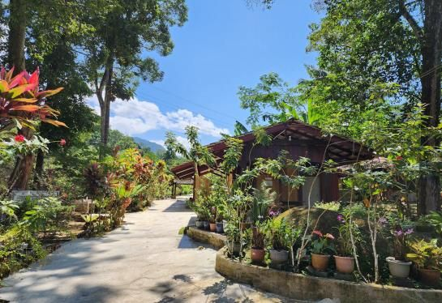
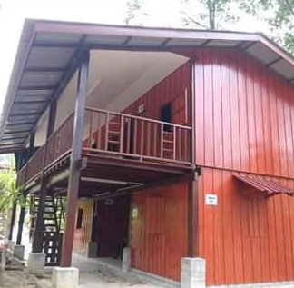
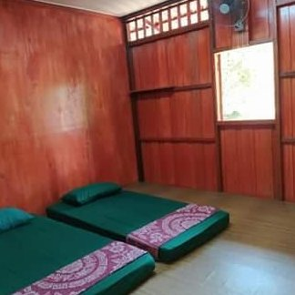

Seberangi jambatan gantung dan lihat sungai serta keluarga yang mandi-manda di bawah — kemudian berehat di tengah kehijauan, sambil deruan sungai menghilangkan tekanan kota. Kawasan kami bersih, terjaga rapi dan sesuai untuk keluarga, kumpulan serta pencinta alam.
Datang untuk lawatan harian, berkhemah di tepi sungai atau bermalam di chalet — mandi-manda, berkelah, bermain dan ber-BBQ sambil menikmati pemandangan.
Seret pemegang untuk melihat bahagian dalam Rumah Dua Tingkat (Blok B).


dalam